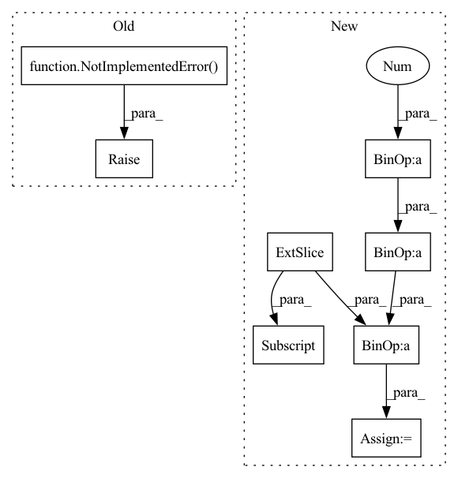

Pattern ID :34391

Before Change
Returns: values of Vee * psi
"""
raise NotImplementedError()
def nuclear_potential(self, pos):
"""Compute the potential of the wf points
Args:
After Change
for ielec1 in range(self.nelec - 1):
epos1 = pos[:, ielec1 *
self.ndim:(ielec1 + 1) * self.ndim]
for ielec2 in range(ielec1 + 1, self.nelec):
epos2 = pos[:, ielec2 *
self.ndim:(ielec2 + 1) * self.ndim]
r = torch.sqrt(((epos1 - epos2)**2).sum(1)) // + 1E-12
pot += (1. / r)
return pot.view(-1, 1)
In pattern: SUPERPATTERN
Frequency: 3
Non-data size: 8
Instances
Fragment ID: 98649251
Project Name: nlesc-jcer/qmctorch
Commit Name: adaaa1ed349fb72bbacad1c74788252742eddbf5
Time: 2020-05-25
Author: nicolas.gm.renaud@gmail.com
File Name: qmctorch/wavefunction/wf_base.py
M Class Name: WaveFunction
N Class Name: WaveFunction
M Method Name: electronic_potential(2)
N Method Name: electronic_potential(2)
M Parent Class: torch.nn.Module
N Parent Class: torch.nn.Module
M File Name: qmctorch/wavefunction/wf_base.py
N File Name: qmctorch/wavefunction/wf_base.py
M Start Line: 41
M End Line: 41
N Start Line: 47
N End Line: 57
'>
Before Change
Returns: values of Ven * psi
"""
raise NotImplementedError()
def nuclear_repulsion(self):
"""Compute the nuclear repulsion term
After Change
p = torch.zeros(pos.shape[0], device=self.device)
for ielec in range(self.nelec):
istart = ielec * self.ndim
iend = (ielec + 1) * self.ndim
pelec = pos[:, istart:iend]
for iatom in range(self.natom):
patom = self.ao.atom_coords[iatom, :]
Z = self.ao.atomic_number[iatom]
r = torch.sqrt(((pelec - patom)**2).sum(1)) // + 1E-12
p += -Z / r
return p.view(-1, 1)
'>
Fragment ID: 98649218
Project Name: nlesc-jcer/qmctorch
Commit Name: adaaa1ed349fb72bbacad1c74788252742eddbf5
Time: 2020-05-25
Author: nicolas.gm.renaud@gmail.com
File Name: qmctorch/wavefunction/wf_base.py
M Class Name: WaveFunction
N Class Name: WaveFunction
M Method Name: nuclear_potential(2)
N Method Name: nuclear_potential(2)
M Parent Class: torch.nn.Module
N Parent Class: torch.nn.Module
M File Name: qmctorch/wavefunction/wf_base.py
N File Name: qmctorch/wavefunction/wf_base.py
M Start Line: 50
M End Line: 50
N Start Line: 72
N End Line: 82
'>
Before Change
else actor_critic_output.distributions.mode()
)
if self.teacher_forcing is not None and self.teacher_forcing() > 0:
raise NotImplementedError()
// teacher_forcing_mask = torch.bernoulli(actions.shape, p=self.teacher_forcing())
// teacher_forcing_mask *= step_observation["expert_actions"]
// actions = teacher_forcing_mask * step_observation["expert_actions"] + (1-teacher_forcing_mask)
After Change
):
tf_mask_shape = step_observation["expert_action"].shape[:-1] + (1,)
expert_actions = (
step_observation["expert_action"].view(-1, 2)[:, 0].view(*tf_mask_shape)
)
expert_action_exists_mask = (
step_observation["expert_action"].view(-1, 2)[:, 1].view(*tf_mask_shape)
)
teacher_forcing_mask = (
torch.distributions.bernoulli.Bernoulli(
torch.tensor(self.teacher_forcing(self.rollout_count))
)
.sample(tf_mask_shape)
.long()
.to(self.device)
) * expert_action_exists_mask
actions = (
teacher_forcing_mask * expert_actions
+ (1 - teacher_forcing_mask) * actions
)
outputs = self.vector_tasks.step([a[0].item() for a in actions])
'>
Fragment ID: 98649236
Project Name: allenai/allenact
Commit Name: 8e313465b05e6546339b02ea73bc1ded059bab14
Time: 2020-01-20
Author: lucaw@allenai.org
File Name: onpolicy_sync/trainer.py
M Class Name: Trainer
N Class Name: Trainer
M Method Name: collect_rollout_step(2)
N Method Name: collect_rollout_step(2)
M Parent Class:
N Parent Class:
M File Name: onpolicy_sync/trainer.py
N File Name: onpolicy_sync/trainer.py
M Start Line: 168
M End Line: 194
N Start Line: 184
N End Line: 213